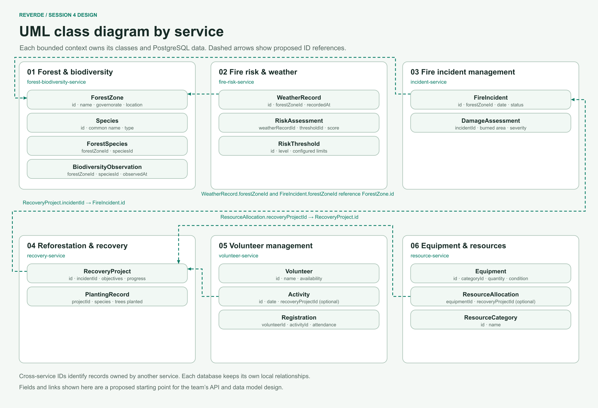

1. Overall microservices architecture
See the request path, the six services, their databases, and the shared infrastructure.
ReVerde is a proposed web platform for protecting Tunisia’s forests and coordinating post-fire recovery. It brings together forest biodiversity, fire-risk monitoring, incident records, restoration, volunteer activities, and equipment.
See the request path, the six services, their databases, and the shared infrastructure.

See the main business classes and how they relate across the six modules.

See which service owns each class and where cross-service IDs are used.
Module owners are Omar (biodiversity), Emna (fire risk), Ela (incidents), Zayneb (recovery), Chebbi (volunteers), and Ahmed (equipment).